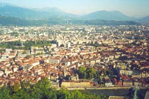

|
|
|
|
Den olympiske historien er preget av både oppturer og nedturer. Under presenteres noen hovedtrekk i den moderne olympiske historien, med vekt på ritualene i forbindelse lekene og det reint sportslige, og ikke uten et visst sjåvinistisk preg:
|
|
| 1906 |
Turntroppen vant Norges første OL-gull i jubileumslekene i Athen. |
| 1908 |
Under lekene i London ble et ikke ukjent slagord lansert: "Det viktigste er ikke å vinne, men å delta!" |
| 1912 |
De første lekene i Norden ble avholdt i Stockholm, der Sverige selvfølgelig ble beste nasjon. 191 nordmenn deltok, det største antallet i historien. |
| 1920 |
I lekene i Antwerpen, som var de første etter verdenskrigen, dukket flere nye symboler og ritualer opp under åpningsseremonien: den olympiske eden, fredsduene og flagget med OL-ringene. (Det siste var riktignok brukt under de panegyptiske lekene i Alexandria i 1914.) Norge fikk 13 gullmedaljer, det største antallet noen gang. (I parentes kan det bemerkes at syv av dem kom i seiling, i båtklasser der det til sammen var hele to båter som ikke bar norsk flagg!) |
| 1924 |
Til tross for bl.a. norsk motstand ble det, som et slags prøve-OL, arrangert en egen vintersportsuke i Chamonix, og Norge "viste verden vinterveien", som det het i et avisreferat, men den 11-årige Sonja Henie endte sist i kunstløp. I 1926 erklærte IOK lekene for offisielle vinterleker. Ishockey og kunstløp hadde forresten alt stått på programmet i sommer-OL! |
| 1928 |
I Amsterdam brant den olympiske ilden for første gang på et OL-stadion. Seilerne tok Norges eneste gullmedalje - med kronprins Olav som mannskap! Noe av grunnen til den sportslige nedturen var at skyting ble strøket av programmet. |
| 1930 |
IOK gjorde et vedtak som innebar at seiersseremoniene fikk den formen de fortsatt har, med seierspall, flaggheising og nasjonalsang. |
| 1932 |
Til stor irritasjon blant nordmennene ble hurtigløp på skøyter i Lake Placid avviklet som fellesstart. |
| 1936 |
Både vinter- og sommer-OL hadde blitt tildelt Tyskland kort tid før Hitlers maktovertakelse. Den olympiske ilden ble tent for første gang i et vinter-OL - ved hjelp av propangass, og verdens mest berømte idrettskvinne, Sonja Henie, avluttet OL-karrieren i Garmisch-Partenkirchen med gullmedalje nummer tre. Den olympiske ilden ble for første gang hentet til olympiastadion i en fakkelstafett - til sommer-OL i Berlin. Sportslig huskes lekene for Jesse Owens prestasjoner, i Norge også for bronsemedaljene i fotball, etter at Tyskland ble slått 2-0 i kvartfinalen med Føreren på tribunen. |
| 1948 |
De første lekene på 12 år ble arrangert i St. Moritz og London. Ikke overraskende ble Sverige, som jo hadde klart å holde seg utenfor krigen, beste nasjon i vinterlekene og nest beste nasjon i sommerlekene etter USA. OL-dronning ble Nederlands Fanny Blankers-Koen med sine fire gull i friidrett. |
| 1952 |
Både vinter- og sommer-OL fant sted i Norden, i Oslo og Helsinki (OL-stadion med tårnet til venstre). OL-ilden ble tent i Sondre Nordheims stue i Morgedal og ført til Oslo med en fakkelstafett. De første vinterlekene i en større by ble en stor suksess både arrangementsmessig og sportslig for Norge. Hjalmar Andersen ble OL-konge med tre skøytegull. I Helsinki ble Emil Zatopek fra Tsjekkoslovakia konge med sine tre gull på langdistansene. |
| 1956 |
Vinter-OL i Cortina d'Ampezzo hadde historiens første kvinnelige edsavlegger, mens fakkelbæreren snublet i ledningen til høyttaleren og seilte på magen bortover isen. østerrikeren Toni Sailer vant utfor, storslalåm og slalåm med til sammen 14 sekunder til sølvvinnerne! Rytterkonkurransene i sommer-OL måtte legges til motsatt side av jordkloden, nemlig Stockholm, pga. australsk lovgiving, mens sommer-OL for øvrig fant sted i Melbourne, der Egil Danielsen satte ny verdensrekord og tok gull i spyd. |
| 1960 |
De amerikanske arrangørene lot OL-ilden tenne i Morgedal, før den ble fløyet over Atlanterhavet til Squaw Valley i California. Sommer-OL i Roma ble de første "TV-lekene". Blant gullmedaljevinnerne var kronprins - siden kong - Konstantin av Hellas i seiling og en viss Cassius Clay i boksing, han som siden tok navnet Muhammed Ali. |
| 1968 |
 For siste gang fikk Norge flest gull under et vinter-OL (før Salt Lake City i 2002 - om IOK godtar både T. Alsgaard og F. Estil som OL-vinnere), som fant sted i Grenoble (t.v.), men for de franske vertene var den store helten Jean-Claude Killy, som vant alle de tre gullmedaljene i alpint. I Mexico ble den olympiske ilden for første gang tent av en kvinne, og amerikaneren Bob Beamon sjokkerte verdens TV-publikum med sitt lengdehopp på 8.90, eller som tittelforsvareren, waliseren Lynn Davies, uttrykte det på en tid da romferdene samlet stor oppmerksomhet: "Det er umulig å konkurrere med en som har gått inn i bane rundt jorda!" Den som var mest sjokkert, var kanskje utøveren selv. I sin korte karriere hadde han siden problemer med å passere 8 meter. |
| 1980 |
Amerikanerne oppdaget - iallfall for et par uker - at det var noe som het hurtigløp på skøyter da Eric Heiden vant alle de fem gullmedaljene i Lake Placid. |
| 1984 |
Et avgjørende gjennombrudd for likestillingen var at maraton for kvinner kom på det olympiske programmet i Los Angeles. Hjemmefavoritten Joan Benoit vant foran Grete Waitz, Rosa Mota og Ingrid Kristiansen. |
| 1988 |
Som de hittil eneste vinterlekene i historien endte Calgary-OL uten norsk gull. I Seoul vakte Florence Griffith-Joyner enorm oppsikt, både for sine ubegripelige sportslige resultater og for sitt useende, men noe langt liv, det fikk hun ikke... |
| 1992 |
For Norge som vinteridrettsnasjon ble lekene i Albertville et slags comeback på toppnivå. Sommer-OL i Juan Antonio Samaranchs hjemby Barcelona ble en stor suksess og samtidig et definitivt farvel med OL som "amatørkonkurranse", ikke minst markert ved det amerikanske basketballaget, "Dream Team". |
| 1994 |
Bare to år etter OL i Albertville ble vinterlekene for første gang arrangert et annet år enn sommer-OL, beslutningen om dette hadde blitt fattet i 1986. I 1988 hadde lekene blitt tildelt Lillehammer, og arrangørlandet fikk flest medaljer, mens Russland, som for første gang etter Sovjetstatens sammenbrudd stilte under eget flagg i OL-sammenheng, vant flest medaljer i gull. (I 1992 hadde de tidligere sovjetrepublikkene unntatt Estland, Latvia og Litauen stilt samlet som SUS, Samveldet av Uavhengige Stater.) Johann Olav Koss ble bokstavelig talt kront som OL-konge med tre gull og tre verdensrekorder på skøyter. |
| 1996 |
For første gang ble altså sommer-OL avholdt et annet år enn vinter-OL. Lekene i Atlanta, som markerte hundreårsjubileet for de moderne olympiske lekene, ble ingen arrangementsmessig suksess. Det faktum at fotball for kvinner kom på programmet, markerte en ny milepæl i arbeidet for likestilling, samtidig som det forbedret den norske medaljebeholdningen, men Vebjørn Rodal er likevel den de fleste nordmenn husker best fra disse lekene. |
| 1998 |
Bjørn Dæhlie avluttet sin olympiske karriere - skulle det vise seg noen år etterpå - med gullmedalje nummer seks, syv og åtte, den siste ved å stupe fullstendig utmattet over mål som vinner av femmila i Nagano. Dermed var han tidenes vinterolympier. |
| 2000 |
Som vanlig erklærte Juan Antonio Samaranch ved avslutningen av tusenårslekene i Sydney at de hadde vært de beste noensinne, kanskje med større rett enn vanlig. Og Knut Holmann ble Norges største sommerolympier gjennom tidene. |
| 2002 |
Ole Einar Bjørndalen vant fire gull i skiskyting i Salt Lake City - og en for nordmenn flest underlig aktivitet som het curling, ble for noen dager en publikumsfavoritt. |
| 2004 |
Grekerne, som mente at de hadde blitt snytt for lekene i 1996, fikk sjansen i 2004. I stedet for kaos ble det en arrangementsmessig suksess - noen uker etter at Hellas sensasjonelt vant fotball-EM. Og Norge sikret seg fem gull. |
| 2006 |
Italienerne var mer opptatt av Juventus enn vinter-OL. Den norske troppen reiste derimot for å ta Torino med storm, men havnet stort sett på isolat eller på do, fikk en inntrykk av gjennom norske medier. Andre (også svenskene) klarte imidlertid å holde seg friske... |
| |
| |
| |
| |
| |
| |
| |